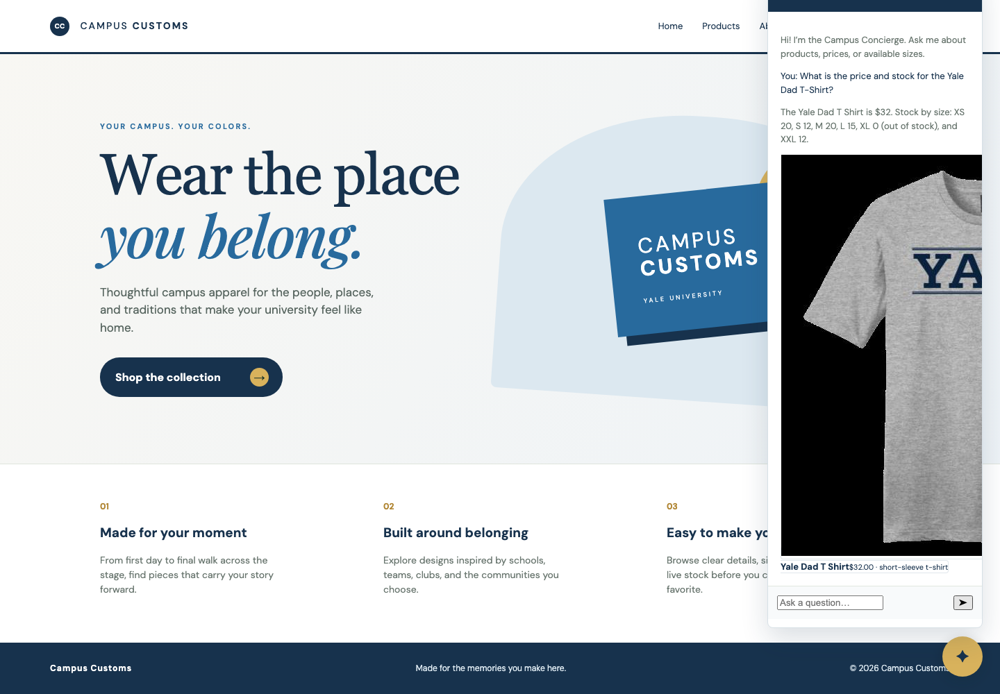
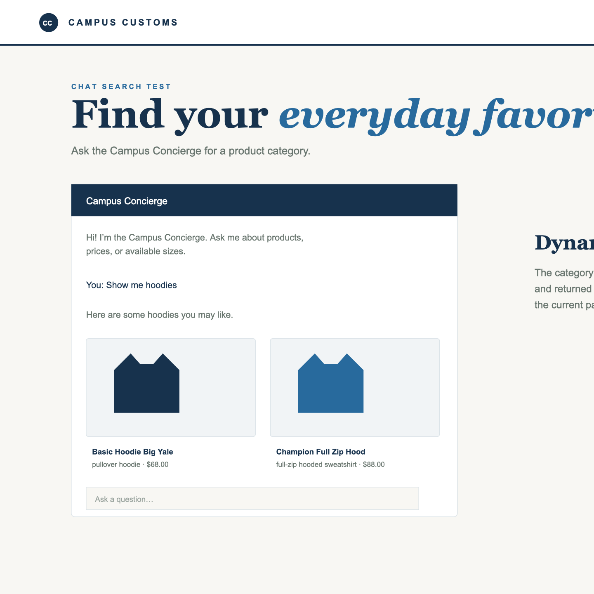
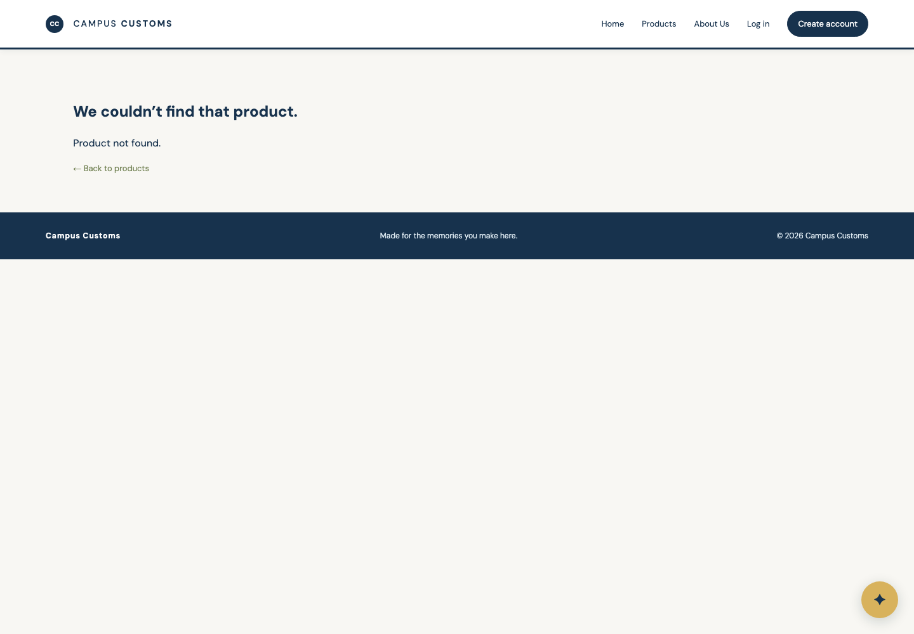

Campus Customs · Problem 11
Screenshots captured from the running Vite frontend and FastAPI/PydanticAI backend. The tests below check real behavior rather than static markup.
The live chat was asked for the Yale Dad T-Shirt price and size-level stock. The assistant returned the database price of $32 and the available quantities, and the chat displayed a clickable product match.

The chat was opened and asked “Show me hoodies.” The assistant returned a category response and the frontend displayed dynamic product-match cards in the chat, each with product details and a link to the existing product detail route.

A deliberately invalid product URL was opened. Instead of a blank or broken page, the app showed a clear not-found explanation and a path back to Products.
